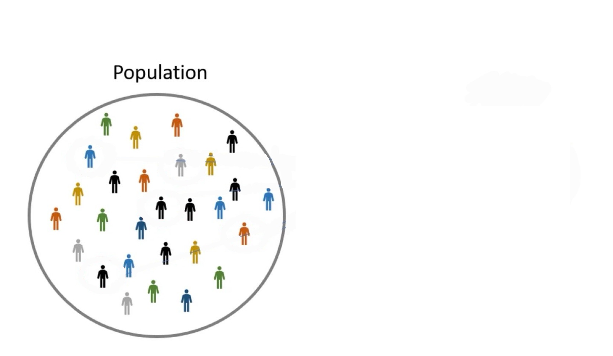
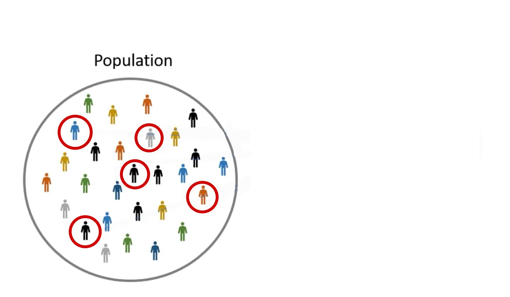
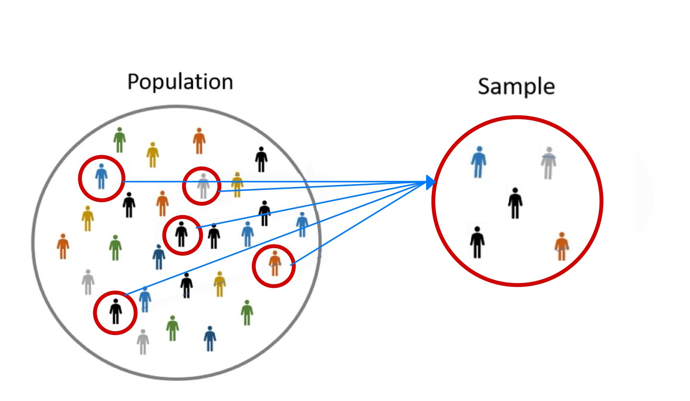
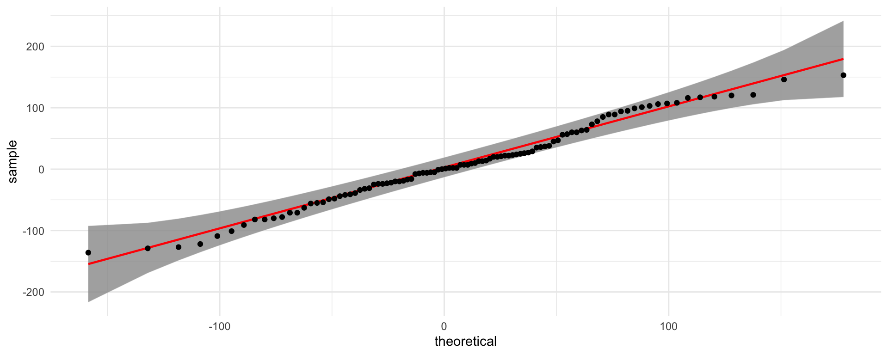
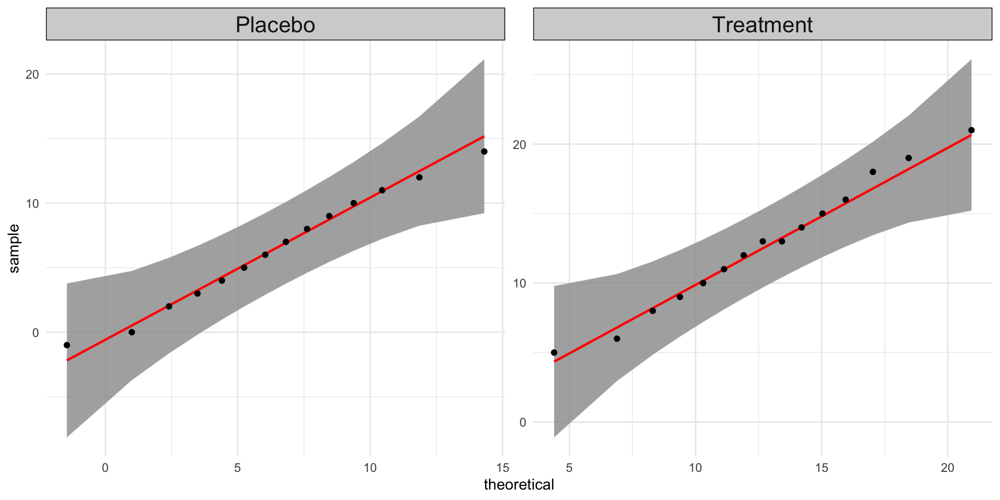
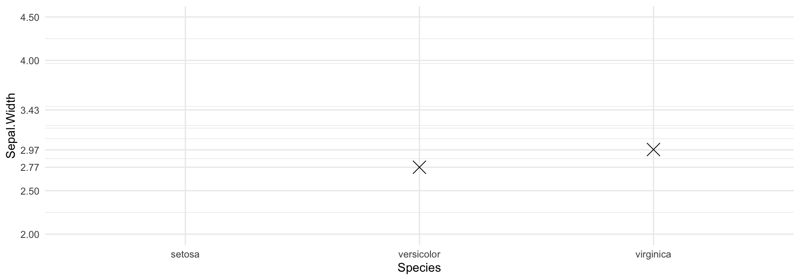
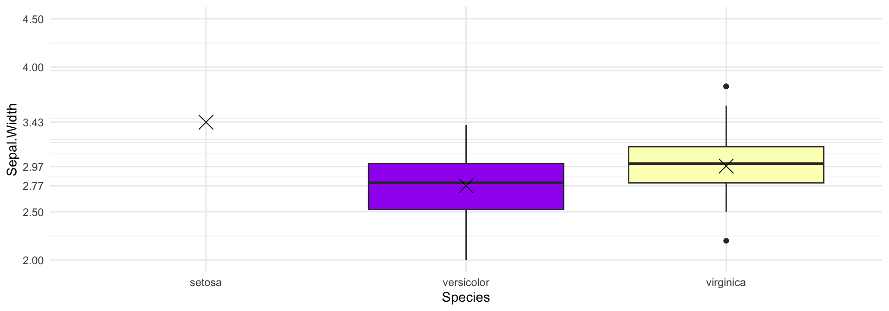
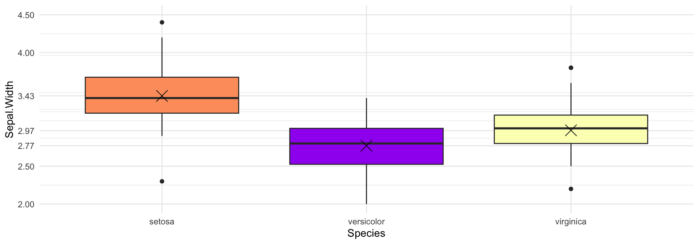
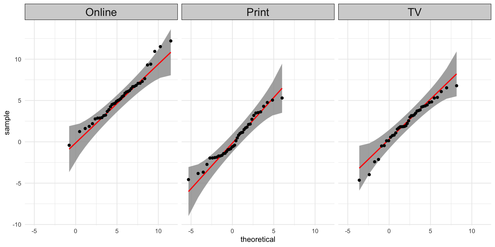
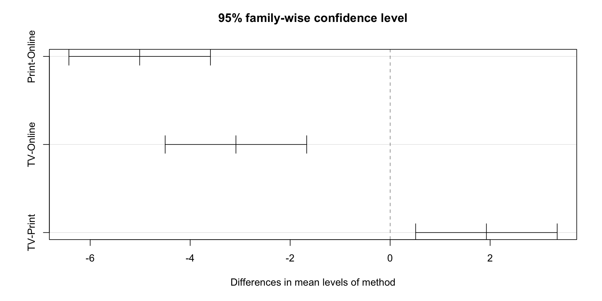

Example
Suppose we are interested in determining if the average starting salary of UT Austin students is different from $72k. Thus, our null and alternative hypothesis are
\[ H_{0}: \mu = 72,000 \\ H_{a}: \mu \neq 72,000. \]

All UT Austin Students Ever

All UT Austin Students Ever

All UT Austin Students Ever
Some UT Austin Students
From our sample we get the average starting salary was $75,000. Thus, we want to know if this is statistically significantly different from $72,000.
Example
Suppose we are interested in determining if there is a difference among the average starting salary of students that graduated from UT Austin, Texas A&M, and Oklahoma University.
All Oklahoma Students Ever
All Texas A&M Students Ever
All UT Austin Students Ever
All Oklahoma Students Ever
All Texas A&M Students Ever
All UT Austin Students Ever
All Oklahoma Students Ever
All Texas A&M Students Ever
All UT Austin Students Ever
Some Oklahoma Students
Some Texas A&M Students
Some UT Austin Students
\(\longrightarrow \quad \bar{x}_{UT} = \$75k\)
\(\longrightarrow \quad \bar{x}_{A\&M} = \$73k\)
\(\longrightarrow \quad \bar{x}_{OU} = \$65k\)
Is there a significant difference in salary?
($) difference due to school?
Or natural variability?
Independent Populations: populations are independent of one another if they have no influence on, and are completely unrelated to, other populations i.e. the outcomes from populations are not dependent on one another
Dependent Populations: populations are dependent on one another if the outcomes from one population influence, or are related to, the outcomes from other populations
Example
Suppose one is interested in determining if there is a difference between \(\mu\) = the mean SAT scores for the genders Male and Female. For \(H_{0}\), we assume that there is no difference in SAT scores between genders. That is,
\[H_{0}: \mu_{Female} = \mu_{Male}\]
Previously, we said p-value \(= 0.02 < \alpha = 0.05\). Thus, there is sufficient evidence that there is a significant difference between \(\mu_{Female}\) and \(\mu_{Male}\). However, are there other factors aside from gender that can cause a difference in SAT scores?
Dependent populations can eliminate confounding factors
| \(X_{1}\) = Dep Pop 1 | \(X_{2}\) = Dep Pop 2 | Difference (\(X_{1} - X_{2}\)) |
|---|---|---|
| 74 | 70 | \(4\) |
| 80 | 73 | \(7\) |
| 68 | 69 | \(-1\) |
| 71 | 76 | \(-6\) |
| \(\vdots\) | \(\vdots\) | \(\vdots\) |
Paired t-Test
Let \(X_{1}\) and \(X_{2}\) represent populations 1 and 2, respectively, and, let \(X_{d} = X_{1} - X_{2}\) and \(\mu_{d} = \mu_{1} - \mu_{2}\). Then, o conduct a hypothesis test for two dependent population means, we will use the Paired t-Test:
Null and Alternative Hypothesis
\(H_{0}: \mu_{d} = value\) typically \(value = 0\), i.e. \(\mu_{1} = \mu_{2}\)
\(H_{a}: \mu_{d} < value\), \(> value\), or \(\neq value\)
Test-Statistic and Distribution
\(t\) \(= \frac{\bar{x}_{d} - \mu_{d}}{s_{d}/\sqrt{n}}\) \(\sim t(df = n - 1)\)
again \(\mu_{d} = 0\) is the common case
Assumption for Paired t-Test: Normality of the \(X_{d}\) (check with QQ-Plot of the differenced data)
t.test() function on the differenced datat.test() function on it. The arguments of interest are:
x: the numeric vector of the differenced datamu: the hypothesized value of \(\mu_{d}\) in \(H_{0}\) (default is 0)alternative: the form of \(H_{a}\), either "less", "greater", or "two.sided" (default is "two.sided")t.test(x, y, paired = TRUE)Example
Suppose one is interested in determining if there is a difference between the mean SAT scores for the genders Female and Male at the 10% significance level. 100 female students were paired to 100 male students based upon their GPA and SAT tutoring and studying hours. The mean difference (Female - Male) for the sample was 9.64, and the standard deviation of the difference was 65.63.
| female | male |
|---|---|
| 1036 | 1019 |
| 1069 | 1059 |
| 1021 | 1008 |
| 1075 | 1130 |
| 1034 | 1066 |
| 1155 | 1009 |
| 1103 | 1074 |
| 1113 | 1087 |
| 1086 | 1079 |
| 1151 | 1035 |
\(H_{0}: \mu_{d} = 0\) where \(\mu_{d} = \mu_{female} - \mu_{male}\)
\(H_{a}: \mu \neq 0\)
\[t = \frac{9.64 - 0}{65.63/\sqrt{100}} = 1.47\]

The normality assumption is reasonable
Example
Suppose one is interested in determining if there is a difference between the mean SAT scores for the genders Female and Male at the 10% significance level. 100 female students were paired to 100 male students based upon their GPA and SAT tutoring and studying hours. The mean difference (Female - Male) for the sample was 9.64, and the standard deviation of the difference was 65.63.
The p-value \(= 0.1451 > \alpha = 0.10\). Therefore, we fail to reject \(H_{0}\) & conclude there is not sufficient evidence that mean SAT scores are different between genders.
Pooled t-Test
Let \(X_{1}\) and \(X_{2}\) represent populations 1 and 2, respectively, with means \(\mu_{1}\) and \(\mu_{2}\). Then, to conduct a hypothesis test for two independent population means, we will use the Pooled t-Test:
Null and Alternative Hypothesis
\(H_{0}: \mu_{1} - \mu_{2} = value\) typically \(value = 0\), i.e. \(\mu_{1} = \mu_{2}\)
\(H_{a}: \mu_{1} - \mu_{2} < value\), \(> value\), or \(\neq value\)
Test-Statistic and Distribution
\(t\) \(= \frac{(\bar{x}_{1} - \bar{x}_{2}) - (\mu_{1} - \mu_{2})}{\sqrt{\frac{s_{1}^{2}}{n_{1}} + \frac{s_{2}^{2}}{n_{2}}}}\) \(\sim t(df = n_{1} + n_{2} - 2)\)
again \(\mu_{1} - \mu_{2} = 0\) is the common case
Assumptions for Pooled t-Test
t.test() function with var.equal = TRUE. The arguments of interest are:
x, y: the numeric vectors of the data for population 1 and population 2, respectivelymu: the hypothesized value of \(\mu_{1} - \mu_{2}\) in \(H_{0}\) (default is 0)alternative: the form of \(H_{a}\), either "less", "greater", or "two.sided" (default is "two.sided")var.equal: set to TRUE for the pooled test (default is FALSE, which gives the unpooled test)t.test(y ~ group, data = data, var.equal = TRUE)Example
A researcher is testing a new blood pressure medication. They randomly assigns 29 patients with high blood pressure to one of two groups: 15 receive the new medication and 14 receive a placebo. After 8 weeks, they recorded each patient’s reduction in systolic blood pressure (mmHg). They want to know if the new medication reduces blood pressure more than the placebo at the 5% significance level.
| patient_id | group | reduction_mmHg |
|---|---|---|
| 2 | Treatment | 8 |
| 14 | Treatment | 10 |
| 7 | Treatment | 13 |
| 11 | Treatment | 5 |
| 9 | Treatment | 9 |
| 24 | Placebo | 8 |
| 16 | Placebo | 7 |
| 21 | Placebo | 11 |
| 26 | Placebo | 10 |
| 23 | Placebo | 14 |
Independent because patients were randomly assigned to each group
Pooled t-Test
\(H_{0}: \mu_{1} = \mu_{2}\) where \(\mu_{1} =\) mean reduction in BP for Treatment & \(\mu_{2} =\) mean reduction in BP for Placebo
\(H_{a}: \mu_{1} > \mu_{2}\)

The normality assumption is reasonable for both populations
Example
A researcher is testing a new blood pressure medication. They randomly assigns 29 patients with high blood pressure to one of two groups: 15 receive the new medication and 14 receive a placebo. After 8 weeks, they recorded each patient’s reduction in systolic blood pressure (mmHg). They want to know if the new medication reduces blood pressure more than the placebo at the 5% significance level.
Two Sample t-test
data: treatment and placebo
t = 3.6447, df = 27, p-value = 0.000562
alternative hypothesis: true difference in means is greater than 0
95 percent confidence interval:
3.322799 Inf
sample estimates:
mean of x mean of y
12.666667 6.428571 The p-value \(= 0.00056 < \alpha = 0.05\). Therefore, we reject \(H_{0}\) and conclude that there is sufficient evidence that the mean reduction for Treatment is larger than Placebo.
Example
Consider the Iris dataset which consist of petal length of three different flower species: Setos, Versicolor, and Virginica of the Iris flower.
One-Factor ANOVA
Let \(X_{1}, \ldots, X_{K}\) represent K different populations and \(\mu_k, k = 1, \ldots, K\) are the population means for a specific variable measured across K different populations. Then, to conduct a hypothesis test to determine whether the mean is different or the same across the K populations, we will use ANOVA:
Null and Alternative Hypothesis
\(H_0: \mu_1 = \mu_2 = \ldots = \mu_K\) i.e. the means are all the same
\(H_{a}: \text{At least one mean } \mu \text{ is different.}\)
Test-Statistic and Distribution
\(F = \frac{\sum_{k = 1}^{K}n_{k}(\bar{X}_{k} - \bar{X})^{2}/(K - 1)}{\sum_{k = 1}^{K}\sum_{i = 1}^{n_{k}}(X_{i} - \bar{X}_{k})^{2}/(n - K)}\) \(= \frac{MSB}{MSW}\) \(\sim F(df_{1} = K - 1, df_{2} = n - K)\)
F is another distribution like \(t\), normal, ect.
Assumptions for ANOVA
Idea
The main idea of ANOVA is to measure the variation between groups relative to the variation within groups.
Table 1. Sepal.Width measurement for three Iris Species
| setosa | versicolor | virginica | |
|---|---|---|---|
| 3.5 | 3.2 | 3.3 | |
| 3.0 | 3.2 | 2.7 | |
| 3.2 | 3.1 | 3.0 | |
| 3.1 | 2.3 | 2.9 | |
| 3.6 | 2.8 | 3.0 | |
| 3.9 | 2.8 | 3.0 | |
| Mean | 3.38 | 2.90 | 3.15 |
Table 1. Sepal.Width measurement for three Iris Species
| setosa | versicolor | virginica | |
|---|---|---|---|
| 3.5 | 3.2 | 3.3 | |
| 3.0 | 3.2 | 2.7 | |
| 3.2 | 3.1 | 3.0 | |
| 3.1 | 2.3 | 2.9 | |
| 3.6 | 2.8 | 3.0 | |
| 3.9 | 2.8 | 3.0 | |
| Mean | 3.38 | 2.90 | 3.15 |
Example
Consider the width of three different flower species: Setos, Versicolor, and Virginica.



aov() functionsummary() function on our aov objectExample
Consider the previous example comparing the width among the Species for the iris dataset.
Example
Suppose Starbucks wants to compare the effectiveness of different advertising channels. Starbucks selects 40 locations in the US to get TV adds only, 40 locations to get online adds, and 40 locations to get print ads. They record the sales increase percentage for all locations and want to compare the mean sales increase across the advertising methods. Using one-factor ANOVA, make a conclusion about the average sales increase across advertising methods at the 5% significance level.
| sales | method |
|---|---|
| 0.1206386 | TV |
| 5.3000761 | TV |
| 3.8594772 | TV |
| 4.2399150 | Online |
| 2.9337329 | Online |
| 1.8675961 | Online |
| -1.1784238 | |
| -1.6275601 | |
| 4.7605004 |
One-factor ANOVA because we are comparing more than 2 means
\(H_0: \mu_1 = \mu_2 = \mu_3\) , where \(\mu_{1}, \mu_2, \mu_3\) are the means for Online, Print, and TV, respectively.
\(H_a: \text{At least one mean } \mu_{k} \text{ is different}\)

The normality assumption is reasonable for all 3 populations
Example
Suppose Starbucks wants to compare the effectiveness of different advertising channels. Starbucks selects 40 locations in the US to get TV adds only, 40 locations to get online adds, and 40 locations to get print ads. They record the sales increase percentage for all locations and want to compare the mean sales increase across the advertising methods. Using one-factor ANOVA, make a conclusion about the average sales increase across advertising methods at the 5% significance level.
Conclusion: Since the p-value < 0.001 < \(\alpha\) = 0.05, we reject \(H_{0}\). Thus, there is sufficient evidence to conclude that at least one mean sales increase is different across the advertising strategies.
Reminder
The hypotheses for ANOVA are \[\begin{align*} H_0&: \mu_1 = \mu_2 = \mu_3\\ H_a&: \text{At least one mean } \mu \text{ is different,} \end{align*}\]
\[\begin{align*} H_0&: \mu_1 = \mu_2 \\ H_a&: \mu_1 \neq \mu_2 \end{align*}\]
\[\begin{align*} H_0&: \mu_1 = \mu_3 \\ H_a&: \mu_1 \neq \mu_3 \end{align*}\]
\[\begin{align*} H_0&: \mu_2 = \mu_3 \\ H_a&: \mu_2 \neq \mu_3 \end{align*}\]
Issue
When we run many hypothesis tests, we increase the chance of finding a “significant” difference just by “luck”. Reminder: In hypothesis testing, we never know if our conclusion is correct
\[\begin{align*} H_0&: \mu_1 = \mu_2 \\ H_a&: \mu_1 \neq \mu_2 \end{align*}\]
\[\begin{align*} H_0&: \mu_1 = \mu_3 \\ H_a&: \mu_1 \neq \mu_3 \end{align*}\]
\[\begin{align*} H_0&: \mu_1 = \mu_3 \\ H_a&: \mu_1 \neq \mu_3 \quad \ldots \end{align*}\]
\[\begin{align*} H_0&: \mu_1 = \mu_{100} \\ H_a&: \mu_1 \neq \mu_{100} \end{align*}\]
\[\begin{align*} H_0&: \mu_2 = \mu_3 \\ H_a&: \mu_2 \neq \mu_3 \end{align*}\]
\[\begin{align*} H_0&: \mu_2 = \mu_4 \\ H_a&: \mu_2 \neq \mu_4 \end{align*}\]
\[\begin{align*} H_0&: \mu_2 = \mu_5 \\ H_a&: \mu_2 \neq \mu_5 \quad \ldots \end{align*}\]
\[\begin{align*} H_0&: \mu_2 = \mu_{100} \\ H_a&: \mu_2 \neq \mu_{100} \end{align*}\]
\[\begin{align*} H_0&: \mu_1 = \mu_2 \\ H_a&: \mu_1 \neq \mu_2 \end{align*}\]
\(\ldots\)
\[\begin{align*} H_0&: \mu_{97} = \mu_{98} \\ H_a&: \mu_{97} \neq \mu_{98} \end{align*}\]
\[\begin{align*} H_0&: \mu_{97} = \mu_{99} \\ H_a&: \mu_{97} \neq \mu_{99} \end{align*}\]
\[\begin{align*} H_0&: \mu_{97} = \mu_{100} \\ H_a&: \mu_{97} \neq \mu_{100} \end{align*}\]
\(FWER = P(\text{at least one error}) = 1 - (1 - \alpha)^{\text{# of test}}\)
This is a lot bigger than our original \(\alpha\)!
Tukey’s Multiple Comparison
After rejecting \(H_{0}\) in ANOVA, we use Tukey’s Multiple Comparison to determine which pairs of means are different, while keeping the family-wise error rate at \(\alpha\):
Null and Alternative Hypothesis
\(H_0: \mu_i = \mu_j\) for every pair of groups \(i \neq j\)
\(H_{a}: \mu_i \neq \mu_j\)
Conclusions
Starbucks Example Revisited
We are wanting to compare advertising strategies for Starbucks between online, print, and tv ads at the 5% significance level. We rejected \(H_{0}\). Thus, we know at least one mean is signficantly different from another.
Tukey multiple comparisons of means
95% family-wise confidence level
Fit: aov(formula = sales ~ method, data = starbucks)
$method
diff lwr upr p adj
Print-Online -5.010282 -6.4258489 -3.594714 0.0000000
TV-Online -3.084722 -4.5002892 -1.669155 0.0000029
TV-Print 1.925560 0.5099923 3.341127 0.0045610For this example, all the means were significantly different from one another
Tukey multiple comparisons of means
95% family-wise confidence level
Fit: aov(formula = sales ~ method, data = starbucks)
$method
diff lwr upr p adj
Print-Online -5.010282 -6.4258489 -3.594714 0.0000000
TV-Online -3.084722 -4.5002892 -1.669155 0.0000029
TV-Print 1.925560 0.5099923 3.341127 0.0045610Notice, none of the intervals contain 0! This gives the same conclusion we reached using p-values.

Chi-Square Goodness of Fit Test
Let a categorical variable have K categories, and let \(p_k, k = 1, \ldots, K\) be the population proportions of each category. Then, to conduct a hypothesis test to determine whether the proportions match a hypothesized distribution, we will use the Chi-Square Goodness of Fit Test:
Null and Alternative Hypothesis
\(H_0: p_1 = p_{1,0},\ p_2 = p_{2,0},\ \ldots,\ p_K = p_{K,0}\) sometimes \(p_{1} = p_{2} = \ldots = p_{K} = 1/K\)
\(H_{a}: \text{At least one proportion } p_k \text{ is different from its hypothesized value.}\)
Test-Statistic and Distribution
\(\chi^{2} = \sum_{k = 1}^{K}\frac{(O_{k} - E_{k})^{2}}{E_{k}}\) \(\stackrel{\cdot}{\sim} \chi^{2}(df = K - 1)\)
\(O_{k}\) = observed count, \(E_{k} = n \cdot p_{k,0}\) = expected count if \(H_{0}\) is true
Assumptions for Chi-Square Goodness of Fit
chisq.test() function on the observed counts. The arguments of interest are:
x: the numeric vector of the observed counts \(O_{k}\) for each categoryp: the vector of hypothesized proportions \(p_{k,0}\) in \(H_{0}\), in the same order as x (default is equal proportions)table() to get the counts and then use chisq.test(table(data), p = p)$expectedExample
The latest Emerson College poll for the Texas Senate race polled 947 decided voters that were likely to vote. Of the 947, 476 said they would vote for James Talarico (D), 458 for Ken Paxton (R), and 13 for Ted Brown (L). We want to make a conclusion at the 5% level of significance on whether there is a significant difference in the proportion of likely voters who support each of the three candidates.
\(\chi^{2}\) GOF test because we are comparing multiple categories.
\(H_0: p_{D} = p_{R} = p_{L} = 1/3\)
\(H_a: \text{At least one } p_{k} \text{ is different than hypothesized}\)
The assumption is \(E_{k} = n \cdot p_{k} \geq 5\). Here, \(E_{k} = 947 \cdot (1/3) > 5\) for all \(k\).
Example
The latest Emerson College poll for the Texas Senate race polled 947 decided voters that were likely to vote. Of the 947, 476 said they would vote for James Talarico (D), 458 for Ken Paxton (R), and 13 for Ted Brown (L). We want to make a conclusion at the 5% level of significance on whether there is a significant difference in the proportion of likely voters who support each of the three candidates.
4. Make a conclusion for the test.
The p-value < 0.001 < \(\alpha = 0.05\). Therefore, we reject \(H_{0}\) and have sufficient evidence to conclude that at least one proportion is significantly different than assumed.
Bonferroni Confidence Intervals
To build \(K\) confidence intervals while keeping the overall level of significance at \(\alpha\), we use the Bonferroni adjustment:
We will split \(\alpha\) across the \(K\) different confidence intervals (i.e. each interval gets \(\alpha/K\) instead of \(\alpha\)) and construct \(K\) intervals at \((1 - \alpha/K) \times 100\%\) level of confidence.
Bonferroni CI in \(\texttt{R}\): Copy, paste, and save this function to your environment in \(\texttt{R}\).
observed: the numeric vector of the observed counts for each categoryalpha: the overall (family-wise) level of significance (default is 0.05)Example
The latest Emerson College poll for the Texas Senate race polled 947 decided voters that were likely to vote. Of the 947, 476 said they would vote for James Talarico (D), 458 for Ken Paxton (R), and 13 for Ted Brown (L). We want to make a conclusion at the 5% level of significance on whether there is a significant difference in the proportion of likely voters who support each of the three candidates.
CI for Talarico: (46.38%, 54.14%). Because the CI does not contain 1/3, we conclude the proportion of votes is different (specifically, larger than) 1/3.
CI for Paxton: (44.50%, 52.25%). Proportion of votes is significantly larger than 1/3.
CI for Brown: (0.72%, 2.61%) Proportion of votes is significantly less than 1/3.
Note: This tells us which proportions are different than assumed. But, we can not make a conclusion on whether Talarico or Paxton will win.
More math and statistics that is beyond this course…
| Comparison | Lower_CI | Upper_CI |
|---|---|---|
| Talarico vs. Ken Paxton | -0.0582365 | 0.0962513 |
| Talarico vs. Brown | 0.4479443 | 0.5298804 |
| Ken Paxton vs. Brown | 0.4289947 | 0.5108152 |
Derik Boonstra, Ph.D.